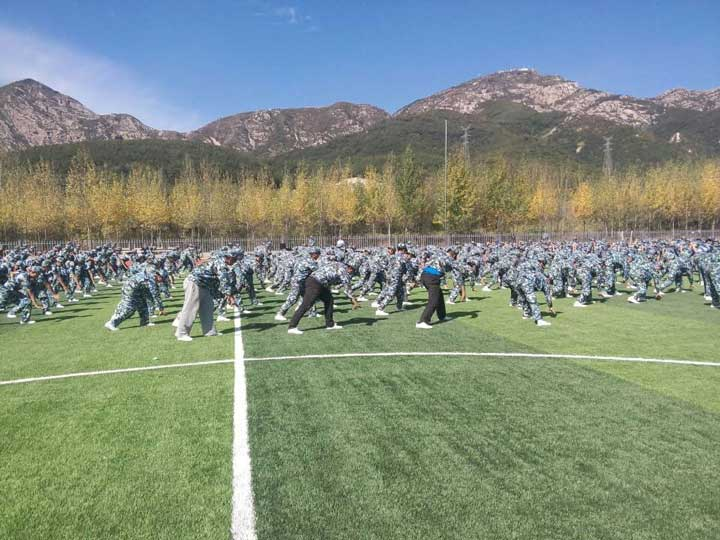

收拾好自己的内务，认识了新同学，送走了父母之后，下一项任务就是军训了。“你若军训，便是晴天”，这句话是永恒不变的真理。所以，一定要有防晒措施，学校发的军训相关装备有【迷彩长裤】【短袖迷彩上衣】【长袖迷彩上衣】【帽子】【手套】【白鞋】，平时训练不允许带手套，可以带帽子，上衣的原则依教官而定。
军训时间为两周，上午三小时、下午三小时，晒黑为荣，偷懒为耻。
军训期间会进行大一新生的体检和体能测试，都不是很严格，请大家不要担心，但一定要认真对待。
军训时班里会选出班级的临时负责人代理军训时的班长工作，正式的班委选举会在9.20日左右进行，一般来说，临时负责人就是以后的班长和团支书，所以有想在以后任职班长的同学可以在军训时好好表现。
军训是大学军训最难得的时光，学弟学妹们一定要珍惜！（以下图片来源于网络，禁止外传）
